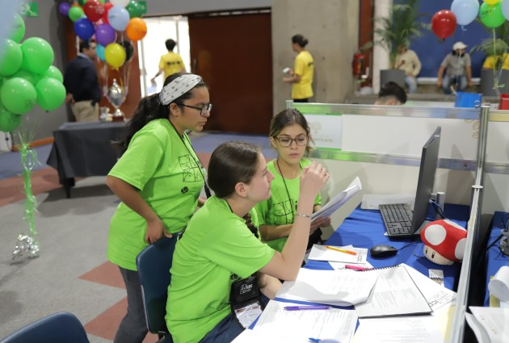

La Final Mexicana #ICPCMX2025 tendrá lugar los días 7 y 8 de noviembre de 2025, en el ITESO Universidad Jesuita de Guadalajara.
Para 2025 los cupos del #GranPremioMX hacia la Final Mexicana #ICPCMX se asignarán en dependencia de la capacidad de la sede, siguiendo la siguiente distribución:
Siendo N la CAPACIDAD DE EQUIPOS de la sede de la Final Mexicana
- El 70%-80% de los CUPOS se asignará a los equipos de mejor DESEMPEÑO considerando el resultado acumulado, una vez finalizada la Tercera Fecha del #GranPremioMX.
- El 10%-20% de los cupos serán CUPOS ESPECIALES. Son cupos destinados a la INSTITUCIÓN SEDE, EQUIPOS FEMENINOS, COMUNIDADES DE INTERÉS y a lograr una MAYOR REPRESENTATIVIDAD. Estos cupos se asignarían a equipos oficiales o invitados que participen, al menos, en una fecha del #GranPremioMX.
- El 10%-20% de los CUPOS se destinará a los equipos con mejor DESEMPEÑO en el REPECHAJE. Solo clasifica UN (1) equipo por institución.
Restricciones
- El equipo debe resolver, al menos, UN(1) problema en las fechas del #GranPremioMX.
- Los equipos que permanezcan en estatus PENDIENTE (PENDING) en el sistema de registro en el momento de asignar los CUPOS, NO SERÁN CANDIDATOS A LOS MISMOS.
La institución sede de la Final Mexicana #ICPCMX2025 ha confirmado una
N = CAPACIDAD DE EQUIPOS = 140
Por lo tanto, la cantidad de CUPOS queda:
- 1-90-CUPOS POR DESEMPEÑO: Al finalizar la TERCERA FECHA del #GranPremioMX2025, considerando la restricción de, máximo, DOS EQUIPOS por institución. (90 CUPOS)
- 91-100-CUPOS POR DESEMPEÑO ADICIONALES: Al finalizar la TERCERA FECHA del #GranPremioMX2025. Después de asignar los 100 CUPOS iniciales, asignar 10 CUPOS ADICIONALES POR DESEMPEÑO, comenzando por el primer lugar del acumulado de la TERCERA FECHA, asignándolos los equipos que no obtuvieron alguno de los 90 CUPOS anteriores y sin ninguna restricción de cantidad de equipos por institución. (100 CUPOS)
- 101-CUPO INSTITUCIÓN SEDE: Clasificará a la Final Mexicana #ICPCMX2025 UN equipo del ITESO Universidad Jesuita de Guadalajara. Sería el mejor equipo ubicado en el standing final del #GranPremioMX2025, después de seleccionar los 100 CUPOS POR DESEMPEÑO. (101 CUPOS)
- 102-CUPO ROSA MÉXICO: Clasificará a la Final Mexicana #ICPC2025 el mejor equipo en el que todas las concursantes sean mujeres. Se selecciona el equipo con estas características mejor ubicado en el standing final del #GranPremioMX2025. Si el equipo ya obtuvo su cupo por los criterios 100 CUPOS POR DESEMPEÑO o 101 CUPO INSTITUCIÓN SEDE, se tomará el siguiente equipo mejor ubicado que cumpla con las características detalladas anteriormente. (102 CUPOS)
- 103-CUPO ROSA INSTITUCIÓN SEDE: Clasificará a la Final Mexicana #ICPCMX2025 el mejor equipo del ITESO Universidad Jesuita de Guadalajara en el que las tres concursantes sean mujeres. Se selecciona el equipo con estas características mejor ubicado en el standing final del #GranPremioMX2025. Si el equipo ya obtuvo su cupo por los criterios 100 CUPOS POR DESEMPEÑO, 101 CUPO INSTITUCIÓN SEDE, o 102 CUPO ROSA MÉXICO; se tomará el siguiente equipo mejor ubicado que cumpla con las características detalladas anteriormente. (103 CUPOS)
- 104-CUPO SISTEMA SEDE: Clasificará a la Final Mexicana #ICPCMX2025 1 (UN) equipo de CUALQUIER INSTITUCIÓN DEL SISTEMA UNIVERSITARIO JESUITA, sin considerar al ITESO Universidad Jesuita de Guadalajara. Sería el mejor equipo ubicado en el standing final del #GranPremioMX2025, después de seleccionar los 100 CUPOS POR DESEMPEÑO y el 102 CUPO ROSA MÉXICO, de una institución que aún no esté representada. Si todos los campus ya están representados, sería el equipo de cualquier campus mejor ubicado. (104 CUPOS)
- 105-CUPO DIRECTO TCMX: Se otorgará UN CUPO DIRECTO al equipo ganador del concurso principal del Training Camp de México 2025. En caso que el equipo y sus integrantes cumplan con las reglas de composición de equipos y sean ELEGIBLES, el cupo otorgado será OFICIAL y el equipo ya no será considerado para el resto de los CUPOS. Si el equipo ganador YA OBTUVO UN CUPO PREVIAMENTE o NO ES ELEGIBLE, se seleccionará el siguiente equipo en el scoreboard del concurso principal que SEA ELEGIBLE. En caso que no sea posible otorgar un CUPO OFICIAL, se otorgarán UN CUPO INVITADO o GUEST TEAM. (105 CUPOS)
- 106-110 CUPOS COMUNIDADES: Se asignarán 5 (CINCO) CUPOS a las comunidades con la PUNTUACIÓN MAS ALTA, al ponderar los TRES (3) CRITERIOS establecidos. Fecha en que se darán a conocer los cupos: Los CUPOS COMUNIDADES se darán a conocer en DOS MOMENTOS: 2 o 3 CUPOS se anunciarán al finalizar la Tercera Fecha del #GranPremioMX2025, en caso que ya existan elementos suficientes para asignarlos. Los CUPOS COMUNIDADES RESTANTES, se darán a conocer posterior a la celebración del REPECHAJE. (110 CUPOS)
- 111-CUPO OMI – GUEST TEAM: Equipo integrado por participantes en la Olimpiada Mexicana de Informática 2025. (111 CUPOS)
- 112-CUPO PREPA ITESO -GUEST TEAM: Equipo representativo de PREPA ITESO. (112 CUPOS)
- 113-122 CUPOS DE REPRESENTATIVIDAD ESTATAL: Se otorgarán CUPOS a equipos de instituciones de estados de la República Mexicana que no estén representados en la Final Mexicana. La cantidad de cupos dependerá de la cantidad de ESTADOS aún no representados.
- 123-140 CUPOS POR DESEMPEÑO EN EL REPECHAJE, solo clasifica UN (1) EQUIPO por institución. (140 CUPOS)
En el momento que un EQUIPO logre un CUPO para la Final Mexicana #ICPCMX2025, independientemente de cuando esto suceda, se debe CONGELAR la COMPOSICIÓN del equipo. Los integrantes NO podrán MOVERSE a otro equipo y NO se podrán AGREGAR NUEVOS INTEGRANTES al equipo que está logrando el cupo.
Algunas situaciones relacionadas con cancelaciones de equipos o imposibilidad de asignar cupos:
- Los CUPOS ESPECIALES otorgados a la INSTITUCIÓN SEDE que NO puedan ser cubiertos o en caso que el equipo que lo obtenga CANCELE su participación, serán asignados a equipos de instituciones del estado de la INSTITUCIÓN SEDE que cumplan con las condiciones establecidas por el cupo. Se promovería, en cada caso, el equipo mejor ubicado en el Scoreboard Acumulado del #GranPremioMX2025 al finalizar la Tercera Fecha.
- Los CUPOS ESPECIALES GENERALES que NO puedan ser cubiertos o en caso que el equipo que lo obtenga CANCELE su participación, serán convertidos en CUPOS OFICIALES DE DESEMPEÑO, agregándose a los 100 CUPOS POR DESEMPEÑO considerados inicialmente. Se promovería, en cada caso, al equipo siguiente que deba obtener el CUPO, siguiendo la lógica de asignación de los 90 CUPOS POR DESEMPEÑO, tomando como referencia el Scoreboard Acumulado del #GranPremioMX2025 al finalizar la Tercera Fecha.
- En caso que un equipo que obtenga uno de los 100 CUPOS POR DESEMPEÑO CANCELE su participación, el CUPO se asignaría al equipo siguiente que deba obtener el CUPO, siguiendo la lógica de asignación de los 100 CUPOS POR DESEMPEÑO, tomando como referencia el Scoreboard Acumulado del #GranPremioMX2025 al finalizar la Tercera Fecha.
- En caso que un equipo que obtenga uno de los CUPOS POR DESEMPEÑO DEL REPECHAJE CANCELE su participación, el CUPO se asignaría al equipo siguiente que deba obtener el CUPO, siguiendo la lógica de asignación de los CUPOS POR DESEMPEÑO DEL REPECHAJE, tomando como referencia el Scoreboard del #Repechaje del #GranPremioMX2025.
- En caso que existan algunos CUPOS POR DESEMPEÑO DEL REPECHAJE que no puedan ser asignados, se comenzará nuevamente la asignación de CUPOS a los equipos con MEJORES POSICIONES en el resultado final del REPECHAJE que aún no tengan cupos, considerando la restricción de 1 equipo por institución.
Otras situaciones relacionadas con cancelaciones serán resueltas por el Comité Directivo del ICPC en México.